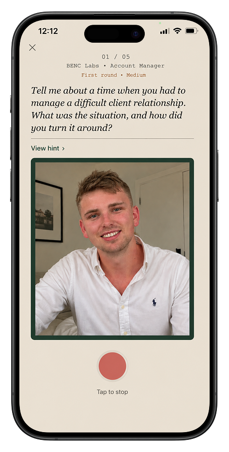
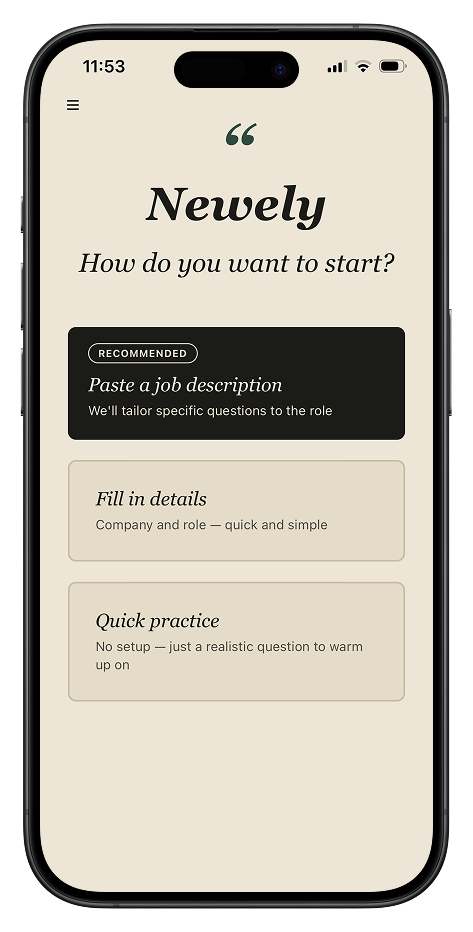
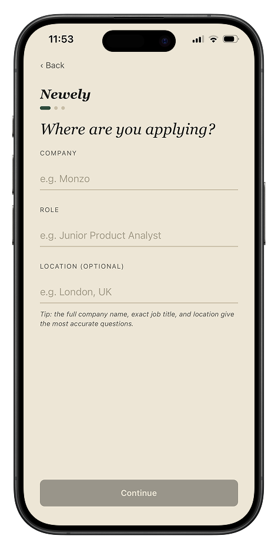
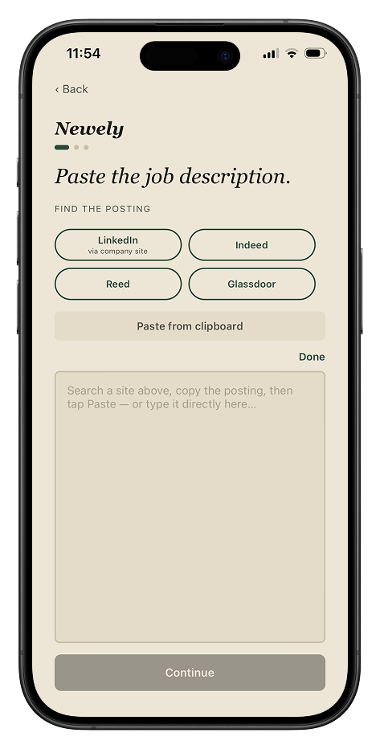
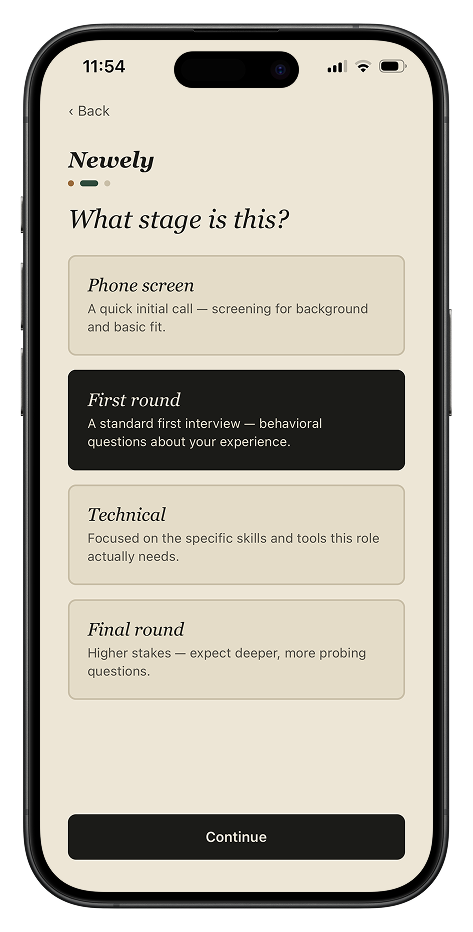
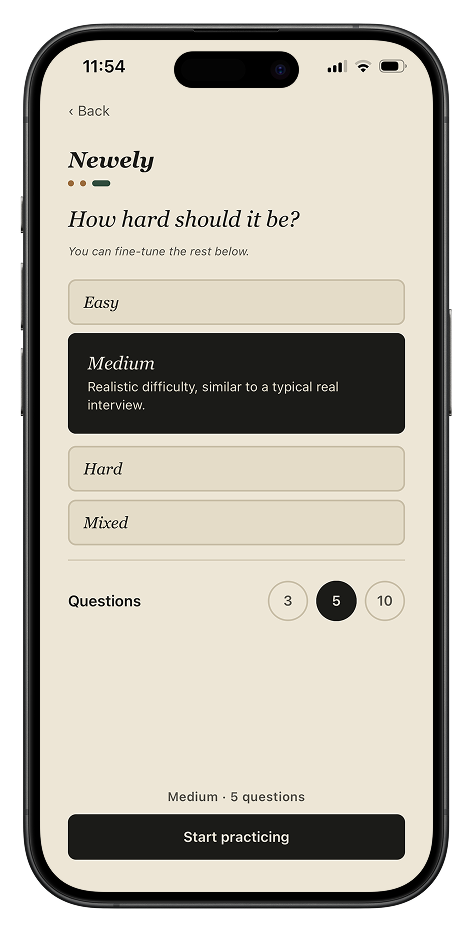
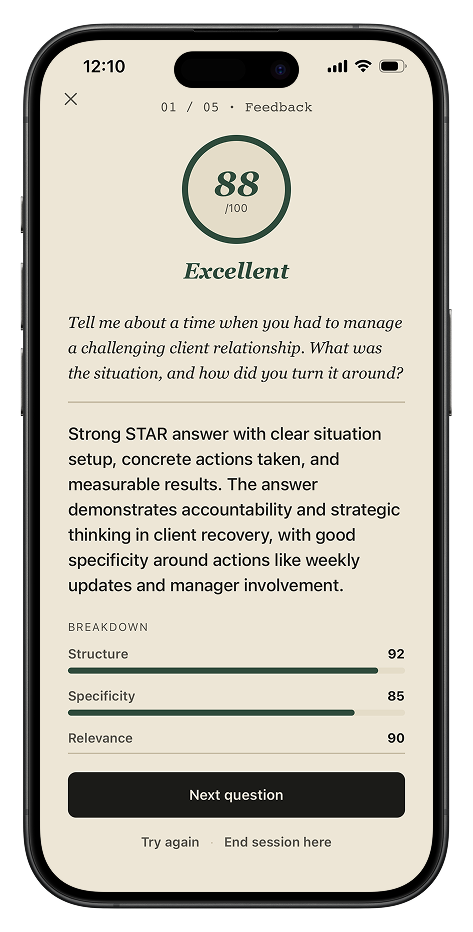
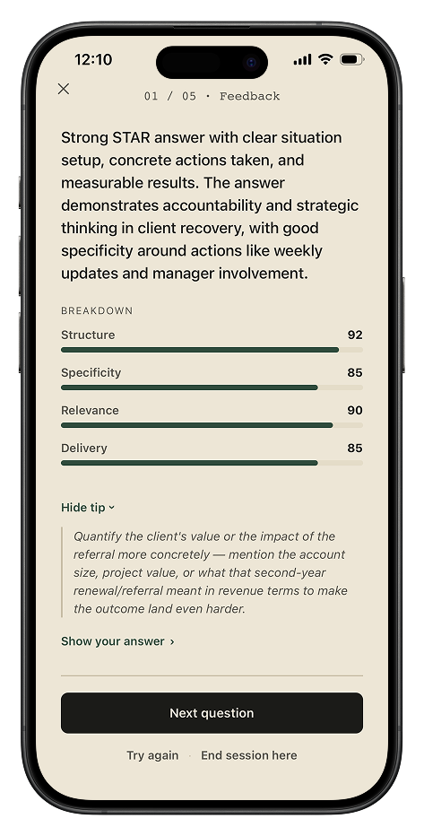

Newely gives you realistic interview questions and honest feedback, so you walk in prepared, not guessing.

Fill in the company and role, paste a job description for tailored questions, or jump straight into a quick practice round with no setup at all.



Phone screen, first round, technical, or final round — pick the stage you're prepping for, and the questions adjust to match what's actually likely to come up.


Every answer gets scored on structure, specificity, relevance, and delivery, with a clear tip on what to improve before your next attempt.

